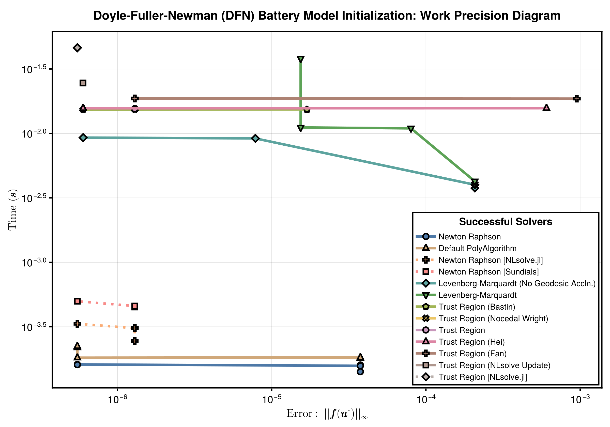

Doyle-Fuller-Newman (DFN) Battery Model Initialization
These benchmarks compares the runtime and error for a range of nonlinear solvers. The solvers are implemented in NonlinearProblemLibrary.jl, where you can find the problem function declarations. We test the following solvers:
- NonlinearSolve.jl's Newton Raphson method (
NewtonRaphson()). - NonlinearSolve.jl's Newton trust region method (
TrustRegion()). - NonlinearSolve.jl's Levenberg-Marquardt method (
LevenbergMarquardt()). - NonlinearSolve.jl's Broyden method (
Broyden()). - MINPACK's Modified Powell method (
CMINPACK(method=:hybr)). - MINPACK's Levenberg-Marquardt method (
CMINPACK(method=:lm)). - NLsolveJL's Newton Raphson (
NLsolveJL(method=:newton)). - NLsolveJL's Newton trust region (
NLsolveJL()). - NLsolveJL's Anderson acceleration (
NLsolveJL(method=:anderson)). - Sundials's Newton-Krylov method (
KINSOL()).
Setup
Fetch required packages.
using NonlinearSolve, LinearSolve, StaticArrays, Sundials, SpeedMapping,
BenchmarkTools, LinearAlgebra, DiffEqDevTools, PolyesterForwardDiff, CairoMakie,
RecursiveFactorization, Enzyme
using SciMLLogging
import MINPACK, NLsolve, PETSc
import LineSearches
const RUS = RadiusUpdateSchemes;Declare the benchmarked solvers (and their names and plotting options).
HagerZhang() = LineSearchesJL(; method = LineSearches.HagerZhang())
MoreThuente() = LineSearchesJL(; method = LineSearches.MoreThuente())
GC.enable(false) # for PETSc
solvers_all = [
(; pkg = :nonlinearsolve, name = "Default PolyAlgorithm",
solver = Dict(:alg => FastShortcutNonlinearPolyalg(; autodiff = AutoEnzyme()))),
(; pkg = :nonlinearsolve, name = "Newton Raphson",
solver = Dict(:alg => NewtonRaphson(; autodiff = AutoEnzyme()))),
(; pkg = :nonlinearsolve,
name = "Newton Raphson (HagerZhang LineSearch)",
solver = Dict(:alg => NewtonRaphson(; linesearch = HagerZhang(), autodiff = AutoEnzyme()))),
(; pkg = :nonlinearsolve,
name = "Newton Raphson (MoreThuente LineSearch)",
solver = Dict(:alg => NewtonRaphson(; linesearch = MoreThuente(), autodiff = AutoEnzyme()))),
(; pkg = :nonlinearsolve,
name = "Newton Raphson (BackTracking LineSearch)",
solver = Dict(:alg => NewtonRaphson(; linesearch = BackTracking(), autodiff = AutoEnzyme()))),
(; pkg = :nonlinearsolve,
name = "Newton Krylov with GMRES",
solver = Dict(:alg => NewtonRaphson(; linsolve = KrylovJL_GMRES(), autodiff = AutoEnzyme()))),
(; pkg = :nonlinearsolve, name = "DFSane", solver = Dict(:alg => DFSane())),
(; pkg = :nonlinearsolve, name = "Trust Region",
solver = Dict(:alg => TrustRegion(; autodiff = AutoEnzyme()))),
(; pkg = :nonlinearsolve,
name = "Trust Region (NLsolve Update)",
solver = Dict(:alg => TrustRegion(; radius_update_scheme = RUS.NLsolve, autodiff = AutoEnzyme()))),
(; pkg = :nonlinearsolve,
name = "Trust Region (Nocedal Wright)",
solver = Dict(:alg => TrustRegion(; radius_update_scheme = RUS.NocedalWright, autodiff = AutoEnzyme()))),
(; pkg = :nonlinearsolve,
name = "Trust Region (Hei)",
solver = Dict(:alg => TrustRegion(; radius_update_scheme = RUS.Hei, autodiff = AutoEnzyme()))),
(; pkg = :nonlinearsolve,
name = "Trust Region (Yuan)",
solver = Dict(:alg => TrustRegion(; radius_update_scheme = RUS.Yuan, autodiff = AutoEnzyme()))),
(; pkg = :nonlinearsolve,
name = "Trust Region (Bastin)",
solver = Dict(:alg => TrustRegion(; radius_update_scheme = RUS.Bastin, autodiff = AutoEnzyme()))),
(; pkg = :nonlinearsolve,
name = "Trust Region (Fan)",
solver = Dict(:alg => TrustRegion(; radius_update_scheme = RUS.Fan, autodiff = AutoEnzyme()))),
(; pkg = :nonlinearsolve, name = "Levenberg-Marquardt",
solver = Dict(:alg => LevenbergMarquardt(; autodiff = AutoEnzyme()))),
(; pkg = :nonlinearsolve,
name = "Levenberg-Marquardt with Cholesky",
solver = Dict(:alg => LevenbergMarquardt(;
linsolve = CholeskyFactorization(), autodiff = AutoEnzyme()))),
(; pkg = :nonlinearsolve,
name = "Levenberg-Marquardt (No Geodesic Accln.)",
solver = Dict(:alg => LevenbergMarquardt(; disable_geodesic = Val(true), autodiff = AutoEnzyme()))),
(; pkg = :nonlinearsolve,
name = "Levenberg-Marquardt (No Geodesic Accln.) with Cholesky",
solver = Dict(:alg => LevenbergMarquardt(; disable_geodesic = Val(true),
linsolve = CholeskyFactorization(), autodiff = AutoEnzyme()))), (;
pkg = :wrapper, name = "Newton Raphson [Sundials]",
solver = Dict(:alg => KINSOL(; linear_solver = :LapackDense, maxsetupcalls = 1))),
(; pkg = :wrapper,
name = "Newton Krylov [Sundials]",
solver = Dict(:alg => KINSOL(; linear_solver = :GMRES, maxsetupcalls = 1, krylov_dim = 1000))),
(; pkg = :wrapper,
name = "Newton Raphson with LineSearch [Sundials]",
solver = Dict(:alg => KINSOL(; globalization_strategy = :LineSearch, maxsetupcalls = 1))), (;
pkg = :wrapper, name = "Newton Raphson [NLsolve.jl]",
solver = Dict(:alg => NLsolveJL(; method = :newton, autodiff = :forward))),
(; pkg = :wrapper, name = "Trust Region [NLsolve.jl]",
solver = Dict(:alg => NLsolveJL(; autodiff = :forward))), (;
pkg = :wrapper, name = "Modified Powell [MINPACK]",
solver = Dict(:alg => CMINPACK(; method = :hybr))),
(; pkg = :wrapper, name = "Levenberg-Marquardt [MINPACK]",
solver = Dict(:alg => CMINPACK(; method = :lm))), (;
pkg = :wrapper, name = "Speed Mapping [SpeedMapping.jl]",
solver = Dict(:alg => SpeedMappingJL())),
(; pkg = :wrapper,
name = "Newton Raphson [PETSc]",
solver = Dict(:alg => PETScSNES(; snes_type = "newtonls", snes_linesearch_type = "basic"))),
(; pkg = :wrapper,
name = "Newton Raphson with QR [PETSc]",
solver = Dict(:alg => PETScSNES(;
snes_type = "newtonls", snes_linesearch_type = "basic", pc_type = "qr"))),
(; pkg = :wrapper, name = "Newton Raphson with BackTracking [PETSc]",
solver = Dict(:alg => PETScSNES(; snes_type = "newtonls"))),
(; pkg = :wrapper, name = "Newton Raphson with BackTracking & QR [PETSc]",
solver = Dict(:alg => PETScSNES(; snes_type = "newtonls", pc_type = "qr"))),
(; pkg = :wrapper, name = "Trust Region [PETSc]",
solver = Dict(:alg => PETScSNES(; snes_type = "newtontr"))),
(; pkg = :wrapper,
name = "Newton Krylov with GMRES [PETSc]",
solver = Dict(:alg => PETScSNES(;
snes_type = "newtonls", snes_linesearch_type = "basic",
ksp_type = "gmres", ksp_gmres_restart = 1000)))
];Setup the problem
function f!(out, u, p = nothing)
out[1] = -u[33]
out[2] = -u[32]
out[3] = -u[31]
out[4] = 1.9876764062810574e10(u[1] + u[4]) - 1.9876764062810574e10u[23]
out[5] = -u[2] + (-1.5546404484393263e-11exp(-19.460872248113507(-0.4 - u[10] + u[26])))
out[6] = -1.9876764062810574e10u[14] + 1.9876764062810574e10(u[3] + u[6])
out[7] = -1.9876764062810574e10u[4] +
114676.11822324689(-exp(-19.460872248113507(-0.6608489145760508 + u[25])) +
exp(19.460872248113507(-0.6608489145760508 + u[25])))
out[8] = -1.9876764062810574e10u[12] + 1.9876764062810574e10(u[2] + u[5])
out[9] = -1.9876764062810574e10u[6] +
114676.1182232469(-exp(-19.460872248113507(-0.6608489145760508 - u[11] +
u[27])) +
exp(19.460872248113507(-0.6608489145760508 - u[11] + u[27])))
out[10] = -4.284490145672665e10u[19] + 4.284490145672665e10(u[31] + u[7])
out[11] = -4.284490145672665e10u[21] + 4.284490145672665e10(u[32] + u[8])
out[12] = -4.284490145672665e10u[22] + 4.284490145672665e10(u[33] + u[9])
out[13] = 0.025692579121085843(7.680104664733624e7(u[10] - u[11]) +
7.680104664733624e7u[10]) - 1.793773306620288e9u[12]
out[14] = -u[3] +
(-1.5546404484393263e-11exp(-19.460872248113507(-0.4 - u[11] + u[27])))
out[15] = -1.9876764062810574e10u[5] +
114676.1182232469(-exp(-19.460872248113507(-0.6608489145760506 - u[10] +
u[26])) +
exp(19.460872248113507(-0.6608489145760506 - u[10] +
u[26])))
out[16] = 0.025692579121085843(7.680104664733624e7(-u[10] + u[11]) +
1.4529008434739566e8(u[11] - u[13])) -
1.793773306620288e9u[14]
out[17] = -1.793773306620288e9u[14] - 1.4404300298567445e9(-u[26] + u[27])
out[18] = 0.025692579121085843(5.1142109690283257e8(-u[11] + u[13]) +
4.7254130462088e9(u[13] - u[15]))
out[19] = 0.025692579121085843(4.7254130462088e9(-u[13] + u[15]) +
4.7254130462088e9(u[15] - u[16]))
out[20] = 0.025692579121085843(4.7254130462088e9(-u[15] + u[16]) +
2.3040372207628164e8(u[16] - u[17]))
out[21] = 0.025692579121085843(7.200116314883803e7(-u[16] + u[17]) +
3.6900178974461965e7(u[17] - u[18])) -
2.193876971198113e9u[19]
out[22] = -4.284490145672665e10u[7] +
147554.10828979727(-exp(-19.460872248113507(-3.3618450059739535 - u[17] +
u[28])) +
exp(19.460872248113507(-3.3618450059739535 - u[17] +
u[28])))
out[23] = 0.025692579121085843(3.6900178974461965e7(-u[17] + u[18]) +
3.6900178974461965e7(u[18] - u[20])) -
2.193876971198113e9u[21]
out[24] = -4.284490145672665e10u[8] +
147554.10828979727(-exp(-19.460872248113507(-3.3618450059739535 - u[18] +
u[29])) +
exp(19.460872248113507(-3.3618450059739535 - u[18] +
u[29])))
out[25] = 948060.7678835923(-u[18] + u[20]) - 2.193876971198113e9u[22]
out[26] = -u[1] + (-1.5546404484393263e-11exp(-19.460872248113507(-0.4 + u[25])))
out[27] = -2.193876971198113e9u[22] +
0.025692579121085843(-37499.99999999999u[24] -
8.296874999999998e10(-u[29] + u[30]))
out[28] = -1.793773306620288e9u[23] +
0.025692579121085843(34090.90909090909u[24] -
5.6064049586776855e10(u[25] - u[26]))
out[29] = -1.793773306620288e9u[12] +
0.025692579121085843(-5.6064049586776855e10(-u[25] + u[26]) -
5.6064049586776855e10(u[26] - u[27]))
out[30] = -2.193876971198113e9u[19] - 2.1316811739525905e9(u[28] - u[29])
out[31] = -2.193876971198113e9u[21] +
0.025692579121085843(-8.296874999999998e10(-u[28] + u[29]) -
8.296874999999998e10(u[29] - u[30]))
out[32] = -4.284490145672665e10u[9] +
147554.10828979727(-exp(-19.460872248113507(-3.3618450059739535 - u[20] +
u[30])) +
exp(19.460872248113507(-3.3618450059739535 - u[20] +
u[30])))
out[33] = 292.3000724036127 + u[24]
nothing
end
n = 1
x_sol = [
-3.889310081682032e-13,
-5.690845522092043e-13,
-1.4900105367898274e-12,
-2.1680981422696e-5,
-3.284624075480569e-5,
-8.820027287447222e-5,
9.53999632159426e-5,
2.1138249693289567e-5,
1.1829446876191545e-5,
0.019709320908045884,
0.06927785744111935,
-3.2846241323890243e-5,
0.13786323434647954,
-8.820027436448276e-5,
0.14528607936456214,
0.15270892438264475,
0.3049460860584471,
0.3812355737657502,
9.53999632159426e-5,
0.40860971681949443,
2.1138249693289567e-5,
1.1829446876191545e-5,
-2.1680981811627007e-5,
-292.3000724036127,
0.5895178515117894,
0.5896685912243755,
0.5897784273806014,
3.837532182598256,
3.8376303660343676,
3.837750304468262,
0.0,
0.0,
0.0
]
x_start = zeros(length(x_sol))
x_start[25:27] .= 0.6608489145760508
x_start[28:30] .= 3.3618450059739433
dict = Dict("n" => n, "start" => x_start, "sol" => x_sol,
"title" => "Doyle-Fuller-Newman (DFN) Battery Model Initialization")
testcase = (; prob = NonlinearProblem(f!, dict["start"]), true_sol = dict["sol"])(prob = SciMLBase.NonlinearProblem{Vector{Float64}, true, SciMLBase.NullPar
ameters, SciMLBase.NonlinearFunction{true, SciMLBase.AutoSpecialize, typeof
(Main.var"##WeaveSandBox#232".f!), LinearAlgebra.UniformScaling{Bool}, Noth
ing, Nothing, Nothing, Nothing, Nothing, Nothing, Nothing, Nothing, Nothing
, Nothing, typeof(SciMLBase.DEFAULT_OBSERVED_NO_TIME), Nothing, Nothing, No
thing, Nothing}, Base.Pairs{Symbol, Union{}, Tuple{}, @NamedTuple{}}, SciML
Base.StandardNonlinearProblem, Nothing, Nothing}(SciMLBase.NonlinearFunctio
n{true, SciMLBase.AutoSpecialize, typeof(Main.var"##WeaveSandBox#232".f!),
LinearAlgebra.UniformScaling{Bool}, Nothing, Nothing, Nothing, Nothing, Not
hing, Nothing, Nothing, Nothing, Nothing, Nothing, typeof(SciMLBase.DEFAULT
_OBSERVED_NO_TIME), Nothing, Nothing, Nothing, Nothing}(Main.var"##WeaveSan
dBox#232".f!, LinearAlgebra.UniformScaling{Bool}(true), nothing, nothing, n
othing, nothing, nothing, nothing, nothing, nothing, nothing, nothing, SciM
LBase.DEFAULT_OBSERVED_NO_TIME, nothing, nothing, nothing, nothing), [0.0,
0.0, 0.0, 0.0, 0.0, 0.0, 0.0, 0.0, 0.0, 0.0 … 0.0, 0.6608489145760508, 0.
6608489145760508, 0.6608489145760508, 3.3618450059739433, 3.361845005973943
3, 3.3618450059739433, 0.0, 0.0, 0.0], SciMLBase.NullParameters(), SciMLBas
e.StandardNonlinearProblem(), nothing, nothing, Base.Pairs{Symbol, Union{},
Tuple{}, @NamedTuple{}}()), true_sol = [-3.889310081682032e-13, -5.6908455
22092043e-13, -1.4900105367898274e-12, -2.1680981422696e-5, -3.284624075480
569e-5, -8.820027287447222e-5, 9.53999632159426e-5, 2.1138249693289567e-5,
1.1829446876191545e-5, 0.019709320908045884 … -292.3000724036127, 0.58951
78515117894, 0.5896685912243755, 0.5897784273806014, 3.837532182598256, 3.8
376303660343676, 3.837750304468262, 0.0, 0.0, 0.0])Sets tolerances.
abstols = 1.0 ./ 10.0 .^ (3:0.5:6)
reltols = 1.0 ./ 10.0 .^ (3:0.5:6);Prepares various helper functions for benchmarking a specific problem.
function log_msg(msg; kwargs...)
if startswith(msg, "[Info]")
@info msg
elseif startswith(msg, "[Warn]")
@warn msg
elseif startswith(msg, "[Error]")
@error msg
else
@info msg
end
Base.printstyled(msg; kwargs...)
return
end
function check_solver(prob, solver)
try
sol = solve(prob.prob, solver.solver[:alg]; abstol = 1e-4, reltol = 1e-4,
maxiters = 10000)
err = norm(sol.resid, Inf)
if !SciMLBase.successful_retcode(sol.retcode)
log_msg(
"[Warn] Solver $(solver.name) returned retcode $(sol.retcode) with an residual norm = $(norm(sol.resid)).\n";
color = :red)
return false
elseif err > 1e3
log_msg(
"[Warn] Solver $(solver.name) had a very large residual (norm = $(norm(sol.resid))).\n";
color = :red)
return false
elseif isinf(err) || isnan(err)
log_msg("[Warn] Solver $(solver.name) had a residual of $(err).\n";
color = :red)
return false
end
log_msg(
"[Info] Solver $(solver.name) successfully solved the problem (norm = $(norm(sol.resid))).\n";
color = :green)
catch e
log_msg("[Warn] Solver $(solver.name) threw an error: $e.\n"; color = :red)
return false
end
return true
end
function generate_wpset(prob, solvers)
# Finds the solvers that can solve the problem
successful_solvers = filter(solver -> check_solver(prob, solver), solvers)
return WorkPrecisionSet(prob.prob, abstols, reltols,
getfield.(successful_solvers, :solver);
names = getfield.(successful_solvers, :name), numruns = 50, error_estimate = :l∞,
maxiters = 10000, verbose = SciMLLogging.Standard()),
successful_solvers
endgenerate_wpset (generic function with 1 method)Benchmarks
We here run benchmarks for each of the solvers.
Problem
wp_set, successful_solvers = generate_wpset(testcase, solvers_all);[Info] Solver Default PolyAlgorithm successfully solved the problem (norm =
1.5941038377860503e-6).
[Info] Solver Newton Raphson successfully solved the problem (norm = 1.5941
038377860503e-6).
[Warn] Solver Newton Raphson (HagerZhang LineSearch) returned retcode MaxIt
ers with an residual norm = 196.3434604448566.
[Warn] Solver Newton Raphson (MoreThuente LineSearch) returned retcode MaxI
ters with an residual norm = 208.56523082587998.
[Warn] Solver Newton Raphson (BackTracking LineSearch) returned retcode Max
Iters with an residual norm = 205.06578109867118.
[Warn] Solver Newton Krylov with GMRES returned retcode Unstable with an re
sidual norm = 292.3000724036127.
[Warn] Solver DFSane returned retcode Stalled with an residual norm = 292.3
000724036127.
[Info] Solver Trust Region successfully solved the problem (norm = 6.873726
32864865e-7).
[Info] Solver Trust Region (NLsolve Update) successfully solved the problem
(norm = 6.873420050791921e-7).
[Info] Solver Trust Region (Nocedal Wright) successfully solved the problem
(norm = 1.593960440044342e-6).
[Info] Solver Trust Region (Hei) successfully solved the problem (norm = 7.
52082243191495e-7).
[Warn] Solver Trust Region (Yuan) returned retcode MaxIters with an residua
l norm = 116.21621694755135.
[Info] Solver Trust Region (Bastin) successfully solved the problem (norm =
7.519362935748752e-7).
[Info] Solver Trust Region (Fan) successfully solved the problem (norm = 1.
5941128511089634e-6).
[Info] Solver Levenberg-Marquardt successfully solved the problem (norm = 7
.38426369554924e-5).
[Warn] Solver Levenberg-Marquardt with Cholesky returned retcode Stalled wi
th an residual norm = 0.0003179815605994228.
[Info] Solver Levenberg-Marquardt (No Geodesic Accln.) successfully solved
the problem (norm = 5.246607252366464e-7).
[Warn] Solver Levenberg-Marquardt (No Geodesic Accln.) with Cholesky return
ed retcode InternalLinearSolveFailed with an residual norm = 0.000301547349
8789062.
[Info] Solver Newton Raphson [Sundials] successfully solved the problem (no
rm = 1.6205733409240167e-6).
[Warn] Solver Newton Krylov [Sundials] had a very large residual (norm = In
f).
[Warn] Solver Newton Raphson with LineSearch [Sundials] returned retcode Fa
ilure with an residual norm = 203.8024932082229.
[Info] Solver Newton Raphson [NLsolve.jl] successfully solved the problem (
norm = 1.5941104186169045e-6).
[Info] Solver Trust Region [NLsolve.jl] successfully solved the problem (no
rm = 6.940612093440701e-7).
[Warn] Solver Modified Powell [MINPACK] returned retcode Failure with an re
sidual norm = 292.3000724036127.
[Warn] Solver Levenberg-Marquardt [MINPACK] returned retcode Failure with a
n residual norm = 292.3000724036127.
[Warn] Solver Speed Mapping [SpeedMapping.jl] returned retcode Failure with
an residual norm = 773.9600302958914.
[Warn] Solver Newton Raphson [PETSc] returned retcode Failure with an resid
ual norm = 8.918598151838181e8.
[Warn] Solver Newton Raphson with QR [PETSc] returned retcode Failure with
an residual norm = 8.918620951328129e8.
[Warn] Solver Newton Raphson with BackTracking [PETSc] returned retcode Fai
lure with an residual norm = 280.83522493021263.
[Warn] Solver Newton Raphson with BackTracking & QR [PETSc] returned retcod
e Failure with an residual norm = 280.82134250907274.
[Warn] Solver Trust Region [PETSc] returned retcode Failure with an residua
l norm = 202.00730475517162.
[Warn] Solver Newton Krylov with GMRES [PETSc] returned retcode Failure wit
h an residual norm = 8.918598151838181e8.Plot and Save the Plot
fig = begin
LINESTYLES = Dict(:nonlinearsolve => :solid, :simplenonlinearsolve => :dash,
:wrapper => :dot)
ASPECT_RATIO = 0.7
WIDTH = 1200
HEIGHT = round(Int, WIDTH * ASPECT_RATIO)
STROKEWIDTH = 2.5
colors = cgrad(:tableau_20, length(successful_solvers); categorical = true)
cycle = Cycle([:marker], covary = true)
plot_theme = Theme(Lines = (; cycle), Scatter = (; cycle))
idxs = sortperm(median.(getfield.(wp_set.wps, :times)))
with_theme(plot_theme) do
fig = Figure(; size = (WIDTH, HEIGHT))
# `textbf` doesn't work
ax = Axis(fig[1, 1], ylabel = L"Time $\mathbf{(s)}$",
xlabelsize = 22, ylabelsize = 22,
xlabel = L"Error: $\mathbf{||f(u^\ast)||_\infty}$",
xscale = log10, yscale = log10, xtickwidth = STROKEWIDTH,
ytickwidth = STROKEWIDTH, spinewidth = STROKEWIDTH,
xticklabelsize = 20, yticklabelsize = 20)
ls, scs = [], []
for (i, (wp, solver)) in enumerate(zip(wp_set.wps[idxs], successful_solvers[idxs]))
(; name, times, errors) = wp
errors = [err.l∞ for err in errors]
l = lines!(ax, errors, times; linestyle = LINESTYLES[solver.pkg], label = name,
linewidth = 5, color = colors[i])
sc = scatter!(
ax, errors, times; label = name, markersize = 16, strokewidth = 3,
color = colors[i])
push!(ls, l)
push!(scs, sc)
end
axislegend(ax, [[l, sc] for (l, sc) in zip(ls, scs)],
[solver.name for solver in successful_solvers[idxs]], "Successful Solvers";
framevisible = true, framewidth = STROKEWIDTH, orientation = :vertical,
titlesize = 20, nbanks = 1, labelsize = 16,# margin = (0.0, 80.0, 0.0, 0.0),
tellheight = false, tellwidth = true, patchsize = (40.0f0, 20.0f0),
position = :rb)
fig[0, :] = Label(fig,
"Doyle-Fuller-Newman (DFN) Battery Model Initialization: Work Precision Diagram",
fontsize = 24, tellwidth = false, font = :bold)
fig
end
end
save("battery_problem_work_precision.svg", fig)CairoMakie.Screen{SVG}Summary of successful solvers
Finally, we print a summary of which solvers successfully solved which problems.
solver_successes = [(solver in successful_solvers) ? "✔" : "✖" for solver in solvers_all];using PrettyTables
io = IOBuffer()
println(io, "```@raw html")
pretty_table(io, reshape(solver_successes, 1, :); backend = :html,
column_labels = getfield.(solvers_all, :name), alignment = :c)
println(io, "```")
Docs.Text(String(take!(io)))| Default PolyAlgorithm | Newton Raphson | Newton Raphson (HagerZhang LineSearch) | Newton Raphson (MoreThuente LineSearch) | Newton Raphson (BackTracking LineSearch) | Newton Krylov with GMRES | DFSane | Trust Region | Trust Region (NLsolve Update) | Trust Region (Nocedal Wright) | Trust Region (Hei) | Trust Region (Yuan) | Trust Region (Bastin) | Trust Region (Fan) | Levenberg-Marquardt | Levenberg-Marquardt with Cholesky | Levenberg-Marquardt (No Geodesic Accln.) | Levenberg-Marquardt (No Geodesic Accln.) with Cholesky | Newton Raphson [Sundials] | Newton Krylov [Sundials] | Newton Raphson with LineSearch [Sundials] | Newton Raphson [NLsolve.jl] | Trust Region [NLsolve.jl] | Modified Powell [MINPACK] | Levenberg-Marquardt [MINPACK] | Speed Mapping [SpeedMapping.jl] | Newton Raphson [PETSc] | Newton Raphson with QR [PETSc] | Newton Raphson with BackTracking [PETSc] | Newton Raphson with BackTracking & QR [PETSc] | Trust Region [PETSc] | Newton Krylov with GMRES [PETSc] |
|---|---|---|---|---|---|---|---|---|---|---|---|---|---|---|---|---|---|---|---|---|---|---|---|---|---|---|---|---|---|---|---|
| ✔ | ✔ | ✖ | ✖ | ✖ | ✖ | ✖ | ✔ | ✔ | ✔ | ✔ | ✖ | ✔ | ✔ | ✔ | ✖ | ✔ | ✖ | ✔ | ✖ | ✖ | ✔ | ✔ | ✖ | ✖ | ✖ | ✖ | ✖ | ✖ | ✖ | ✖ | ✖ |
Appendix
These benchmarks are a part of the SciMLBenchmarks.jl repository, found at: https://github.com/SciML/SciMLBenchmarks.jl. For more information on high-performance scientific machine learning, check out the SciML Open Source Software Organization https://sciml.ai.
To locally run this benchmark, do the following commands:
using SciMLBenchmarks
SciMLBenchmarks.weave_file("benchmarks/NonlinearProblem","nonlinear_battery_problem.jmd")Computer Information:
Julia Version 1.11.9
Commit 53a02c0720c (2026-02-06 00:27 UTC)
Build Info:
Official https://julialang.org/ release
Platform Info:
OS: Linux (x86_64-linux-gnu)
CPU: 128 × AMD EPYC 7502 32-Core Processor
WORD_SIZE: 64
LLVM: libLLVM-16.0.6 (ORCJIT, znver2)
Threads: 128 default, 0 interactive, 64 GC (on 128 virtual cores)
Environment:
JULIA_DEPOT_PATH = /home/crackauc/github-runners/amdci8-1/.julia
JULIA_NUM_THREADS = auto
Package Information:
Status `~/github-runners/amdci8-1/_work/SciMLBenchmarks.jl/SciMLBenchmarks.jl/benchmarks/NonlinearProblem/Project.toml`
⌅ [2169fc97] AlgebraicMultigrid v1.2.0
[6e4b80f9] BenchmarkTools v1.8.0
[13f3f980] CairoMakie v0.15.13
⌃ [2b5f629d] DiffEqBase v7.12.0
⌃ [f3b72e0c] DiffEqDevTools v3.2.0
⌃ [a0c0ee7d] DifferentiationInterface v0.7.20
⌃ [7da242da] Enzyme v0.13.198
[40713840] IncompleteLU v0.2.1
⌃ [b964fa9f] LaTeXStrings v1.4.0
⌃ [d3d80556] LineSearches v7.5.1
⌅ [7ed4a6bd] LinearSolve v3.87.0
[4854310b] MINPACK v1.3.0
⌅ [2774e3e8] NLsolve v4.5.1
[b7050fa9] NonlinearProblemLibrary v0.1.7
⌃ [8913a72c] NonlinearSolve v4.21.0
[ace2c81b] PETSc v0.4.10
[98d1487c] PolyesterForwardDiff v0.1.4
⌃ [08abe8d2] PrettyTables v3.4.5
⌃ [f2c3362d] RecursiveFactorization v0.2.26
⌃ [31c91b34] SciMLBenchmarks v0.1.3
[a6db7da4] SciMLLogging v2.0.4
[efcf1570] Setfield v1.1.2
⌃ [727e6d20] SimpleNonlinearSolve v2.13.1
[9f842d2f] SparseConnectivityTracer v1.2.2
[0a514795] SparseMatrixColorings v0.4.27
[f1835b91] SpeedMapping v0.4.1
[860ef19b] StableRNGs v1.0.4
⌃ [90137ffa] StaticArrays v1.9.18
⌃ [c3572dad] Sundials v6.4.2
[0c5d862f] Symbolics v7.36.0
Info Packages marked with ⌃ and ⌅ have new versions available. Those with ⌃ may be upgradable, but those with ⌅ are restricted by compatibility constraints from upgrading. To see why use `status --outdated`And the full manifest:
Status `~/github-runners/amdci8-1/_work/SciMLBenchmarks.jl/SciMLBenchmarks.jl/benchmarks/NonlinearProblem/Manifest.toml`
⌃ [47edcb42] ADTypes v1.22.4
[14f7f29c] AMD v0.5.3
[621f4979] AbstractFFTs v1.5.0
[6e696c72] AbstractPlutoDingetjes v1.4.0
[1520ce14] AbstractTrees v0.4.5
[7d9f7c33] Accessors v0.1.45
[79e6a3ab] Adapt v4.7.0
[35492f91] AdaptivePredicates v1.2.0
⌅ [2169fc97] AlgebraicMultigrid v1.2.0
[66dad0bd] AliasTables v1.1.3
[27a7e980] Animations v0.4.2
[ec485272] ArnoldiMethod v0.4.0
⌃ [4fba245c] ArrayInterface v7.28.1
[67c07d97] Automa v1.2.0
[13072b0f] AxisAlgorithms v1.1.0
[39de3d68] AxisArrays v0.4.8
[18cc8868] BaseDirs v1.4.0
[6e4b80f9] BenchmarkTools v1.8.0
[e2ed5e7c] Bijections v0.2.2
[62783981] BitTwiddlingConvenienceFunctions v0.1.6
⌃ [70df07ce] BracketingNonlinearSolve v1.12.4
[fa961155] CEnum v0.5.0
[2a0fbf3d] CPUSummary v0.2.7
[96374032] CRlibm v1.0.2
[159f3aea] Cairo v1.1.1
[13f3f980] CairoMakie v0.15.13
[d360d2e6] ChainRulesCore v1.26.1
[fb6a15b2] CloseOpenIntervals v0.1.13
[6b39b394] CodecZstd v0.8.7
[a2cac450] ColorBrewer v0.4.2
[35d6a980] ColorSchemes v3.31.0
[3da002f7] ColorTypes v0.12.1
[c3611d14] ColorVectorSpace v0.11.0
[5ae59095] Colors v0.13.1
⌅ [861a8166] Combinatorics v1.0.2
[38540f10] CommonSolve v0.2.13
[bbf7d656] CommonSubexpressions v0.3.1
[f70d9fcc] CommonWorldInvalidations v1.1.2
[34da2185] Compat v4.18.1
[b152e2b5] CompositeTypes v0.1.4
[a33af91c] CompositionsBase v0.1.2
[95dc2771] ComputePipeline v0.1.8
[2569d6c7] ConcreteStructs v0.2.7
[8f4d0f93] Conda v1.10.3
[187b0558] ConstructionBase v1.6.0
[d38c429a] Contour v0.6.3
[b7a15901] CoreMath v0.1.0
[adafc99b] CpuId v0.3.1
[a8cc5b0e] Crayons v4.2.0
[9a962f9c] DataAPI v1.16.0
[864edb3b] DataStructures v0.19.6
[e2d170a0] DataValueInterfaces v1.0.0
[927a84f5] DelaunayTriangulation v1.6.6
⌃ [2b5f629d] DiffEqBase v7.12.0
⌃ [f3b72e0c] DiffEqDevTools v3.2.0
⌃ [77a26b50] DiffEqNoiseProcess v5.34.0
[163ba53b] DiffResults v1.1.0
[b552c78f] DiffRules v1.16.0
⌃ [a0c0ee7d] DifferentiationInterface v0.7.20
[b4f34e82] Distances v0.10.12
⌃ [31c24e10] Distributions v0.25.130
[ffbed154] DocStringExtensions v0.9.5
[5b8099bc] DomainSets v0.8.1
[7c1d4256] DynamicPolynomials v0.6.6
[4e289a0a] EnumX v1.0.7
⌃ [7da242da] Enzyme v0.13.198
[f151be2c] EnzymeCore v0.8.21
[429591f6] ExactPredicates v2.2.9
[e2ba6199] ExprTools v0.1.11
[55351af7] ExproniconLite v0.10.14
[b86e33f2] FFTA v0.3.1
[7034ab61] FastBroadcast v1.3.6
[9aa1b823] FastClosures v0.3.2
[a4df4552] FastPower v1.4.1
[5789e2e9] FileIO v1.20.0
[8fc22ac5] FilePaths v0.9.0
[48062228] FilePathsBase v0.9.24
[1a297f60] FillArrays v1.17.0
[64ca27bc] FindFirstFunctions v3.2.1
⌃ [6a86dc24] FiniteDiff v2.32.1
⌅ [53c48c17] FixedPointNumbers v0.8.6
[1fa38f19] Format v1.3.7
[f6369f11] ForwardDiff v1.4.5
[b38be410] FreeType v4.1.1
[663a7486] FreeTypeAbstraction v0.10.8
[a85aefff] FunctionMaps v0.1.2
[069b7b12] FunctionWrappers v1.1.3
⌃ [77dc65aa] FunctionWrappersWrappers v1.12.1
[46192b85] GPUArraysCore v0.2.0
⌅ [61eb1bfa] GPUCompiler v1.23.0
⌃ [a0844989] Gamma v1.1.0
[5c1252a2] GeometryBasics v0.5.11
[d7ba0133] Git v1.5.0
[a2bd30eb] Graphics v1.1.3
[86223c79] Graphs v1.14.0
[3955a311] GridLayoutBase v0.11.2
⌅ [eafb193a] Highlights v0.5.3
[3e5b6fbb] HostCPUFeatures v0.1.18
[34004b35] HypergeometricFunctions v0.3.30
[7073ff75] IJulia v1.34.4
[615f187c] IfElse v0.1.1
[2803e5a7] ImageAxes v0.6.12
[c817782e] ImageBase v0.1.7
[a09fc81d] ImageCore v0.10.5
[82e4d734] ImageIO v0.6.9
[bc367c6b] ImageMetadata v0.9.10
[40713840] IncompleteLU v0.2.1
[9b13fd28] IndirectArrays v1.0.0
[d25df0c9] Inflate v0.1.5
[18e54dd8] IntegerMathUtils v0.1.4
[a98d9a8b] Interpolations v0.16.3
⌃ [d1acc4aa] IntervalArithmetic v1.0.10
[8197267c] IntervalSets v0.7.14
[3587e190] InverseFunctions v0.1.17
[92d709cd] IrrationalConstants v0.2.6
[f1662d9f] Isoband v0.1.1
[c8e1da08] IterTools v1.10.0
[82899510] IteratorInterfaceExtensions v1.0.0
[692b3bcd] JLLWrappers v1.8.0
⌅ [682c06a0] JSON v0.21.4
[ae98c720] Jieko v0.2.1
[b835a17e] JpegTurbo v0.1.6
[5ab0869b] KernelDensity v0.6.12
[ba0b0d4f] Krylov v0.10.9
⌃ [929cbde3] LLVM v9.11.0
⌃ [b964fa9f] LaTeXStrings v1.4.0
⌃ [23fbe1c1] Latexify v0.16.11
[10f19ff3] LayoutPointers v0.1.17
[8cdb02fc] LazyModules v0.3.1
⌃ [87fe0de2] LineSearch v0.1.13
⌃ [d3d80556] LineSearches v7.5.1
⌅ [7ed4a6bd] LinearSolve v3.87.0
⌃ [2ab3a3ac] LogExpFunctions v0.3.29
[e6f89c97] LoggingExtras v1.2.0
[bdcacae8] LoopVectorization v0.12.174
[4854310b] MINPACK v1.3.0
⌃ [da04e1cc] MPI v0.20.26
[3da0fdf6] MPIPreferences v0.1.12
[1914dd2f] MacroTools v0.5.16
[ee78f7c6] Makie v0.24.13
[d125e4d3] ManualMemory v0.1.8
[dbb5928d] MappedArrays v0.4.3
[299715c1] MarchingCubes v0.1.11
[0a4f8689] MathTeXEngine v0.6.9
[bb5d69b7] MaybeInplace v0.1.7
[e1d29d7a] Missings v1.2.0
[e94cdb99] MosaicViews v0.3.4
[2e0e35c7] Moshi v0.3.12
[46d2c3a1] MuladdMacro v0.2.7
[102ac46a] MultivariatePolynomials v0.5.19
[ffc61752] Mustache v1.0.21
[d8a4904e] MutableArithmetics v1.8.0
⌅ [d41bc354] NLSolversBase v7.10.0
⌅ [2774e3e8] NLsolve v4.5.1
[77ba4419] NaNMath v1.1.4
[f09324ee] Netpbm v1.1.1
[b7050fa9] NonlinearProblemLibrary v0.1.7
⌃ [8913a72c] NonlinearSolve v4.21.0
⌅ [be0214bd] NonlinearSolveBase v2.33.0
⌃ [5959db7a] NonlinearSolveFirstOrder v2.2.0
⌃ [9a2c21bd] NonlinearSolveQuasiNewton v1.13.3
⌃ [26075421] NonlinearSolveSpectralMethods v1.7.4
[d8793406] ObjectFile v0.5.1
[510215fc] Observables v0.5.5
[6fe1bfb0] OffsetArrays v1.17.0
[52e1d378] OpenEXR v0.3.3
⌅ [bac558e1] OrderedCollections v1.8.2
[90014a1f] PDMats v0.11.41
[ace2c81b] PETSc v0.4.10
[f57f5aa1] PNGFiles v0.4.5
[19eb6ba3] Packing v0.5.1
[5432bcbf] PaddedViews v0.5.12
[69de0a69] Parsers v2.8.7
[eebad327] PkgVersion v0.3.3
[995b91a9] PlotUtils v1.4.4
[e409e4f3] PoissonRandom v0.4.13
[f517fe37] Polyester v0.7.19
[98d1487c] PolyesterForwardDiff v0.1.4
[1d0040c9] PolyesterWeave v0.2.2
[647866c9] PolygonOps v0.1.2
⌃ [d236fae5] PreallocationTools v1.4.1
⌅ [aea7be01] PrecompileTools v1.2.1
[21216c6a] Preferences v1.5.2
⌃ [08abe8d2] PrettyTables v3.4.5
[27ebfcd6] Primes v0.5.7
[92933f4c] ProgressMeter v1.11.0
[43287f4e] PtrArrays v1.4.0
⌃ [0c0d3e7f] PureKLU v1.4.0
[4b34888f] QOI v1.0.2
[1fd47b50] QuadGK v2.11.3
[b3c3ace0] RangeArrays v0.3.2
[c84ed2f1] Ratios v0.4.5
[988b38a3] ReadOnlyArrays v0.2.0
[3cdcf5f2] RecipesBase v1.3.4
⌃ [731186ca] RecursiveArrayTools v4.3.6
⌃ [f2c3362d] RecursiveFactorization v0.2.26
[189a3867] Reexport v1.2.2
[05181044] RelocatableFolders v1.0.1
[ae029012] Requires v1.3.1
[ae5879a3] ResettableStacks v1.3.0
[9fe22ead] RespecializeParams v1.2.0
[79098fc4] Rmath v0.9.0
⌃ [47965b36] RootedTrees v2.25.4
⌃ [f2b01f46] Roots v3.0.6
[5eaf0fd0] RoundingEmulator v0.2.1
[7e49a35a] RuntimeGeneratedFunctions v0.5.24
[fdea26ae] SIMD v3.7.2
[94e857df] SIMDTypes v0.1.0
[476501e8] SLEEFPirates v0.6.46
⌅ [0bca4576] SciMLBase v3.39.1
⌃ [31c91b34] SciMLBenchmarks v0.1.3
⌃ [19f34311] SciMLJacobianOperators v0.1.16
[a6db7da4] SciMLLogging v2.0.4
⌃ [c0aeaf25] SciMLOperators v1.26.0
[431bcebd] SciMLPublic v1.2.4
[53ae85a6] SciMLStructures v1.10.4
[6c6a2e73] Scratch v1.3.0
[efcf1570] Setfield v1.1.2
[65257c39] ShaderAbstractions v0.5.0
[73760f76] SignedDistanceFields v0.4.1
⌃ [727e6d20] SimpleNonlinearSolve v2.13.1
[699a6c99] SimpleTraits v0.9.6
[45858cf5] Sixel v0.1.5
[a2af1166] SortingAlgorithms v1.2.3
⌃ [bd59d7e1] SparseBandedMatrices v1.3.3
[a57abbd0] SparseColumnPivotedQR v2.1.6
[9f842d2f] SparseConnectivityTracer v1.2.2
[0a514795] SparseMatrixColorings v0.4.27
⌃ [276daf66] SpecialFunctions v2.8.3
[f1835b91] SpeedMapping v0.4.1
[860ef19b] StableRNGs v1.0.4
[cae243ae] StackViews v0.1.2
[0c0c59c1] StarAlgebras v0.3.0
⌃ [aedffcd0] Static v1.4.5
[0d7ed370] StaticArrayInterface v1.10.0
⌃ [90137ffa] StaticArrays v1.9.18
[1e83bf80] StaticArraysCore v1.4.4
[10745b16] Statistics v1.11.1
[82ae8749] StatsAPI v1.8.0
[2913bbd2] StatsBase v0.34.12
[4c63d2b9] StatsFuns v2.2.1
[7792a7ef] StrideArraysCore v0.5.9
[69024149] StringEncodings v0.3.7
⌅ [892a3eda] StringManipulation v0.4.7
[09ab397b] StructArrays v0.7.3
[53d494c1] StructIO v0.3.1
⌃ [c3572dad] Sundials v6.4.2
⌃ [2efcf032] SymbolicIndexingInterface v0.3.53
[19f23fe9] SymbolicLimits v1.1.5
⌃ [d1185830] SymbolicUtils v4.44.1
[0c5d862f] Symbolics v7.36.0
[3783bdb8] TableTraits v1.0.1
[bd369af6] Tables v1.13.0
[ed4db957] TaskLocalValues v0.1.3
[62fd8b95] TensorCore v0.1.1
[8ea1fca8] TermInterface v2.0.0
[8290d209] ThreadingUtilities v0.5.6
[731e570b] TiffImages v0.11.9
⌅ [a759f4b9] TimerOutputs v0.5.29
[e689c965] Tracy v0.1.6
[3bb67fe8] TranscodingStreams v0.11.3
⌃ [d5829a12] TriangularSolve v0.2.1
[981d1d27] TriplotBase v0.1.0
[781d530d] TruncatedStacktraces v1.4.0
[3a884ed6] UnPack v1.0.2
[1cfade01] UnicodeFun v0.4.1
[b8865327] UnicodePlots v3.8.4
[1986cc42] Unitful v1.28.0
[3d5dd08c] VectorizationBase v0.21.74
[33b4df10] VectorizedRNG v0.2.26
[81def892] VersionParsing v1.3.0
[d30d5f5c] WeakCacheSets v0.1.0
[44d3d7a6] Weave v0.10.12
[e3aaa7dc] WebP v0.1.3
[efce3f68] WoodburyMatrices v1.1.0
[ddb6d928] YAML v0.4.16
[c2297ded] ZMQ v1.5.1
[6e34b625] Bzip2_jll v1.0.9+0
[4e9b3aee] CRlibm_jll v1.0.1+0
[83423d85] Cairo_jll v1.18.7+0
[a38c48d9] CoreMath_jll v0.1.0+0
⌅ [5ae413db] EarCut_jll v2.2.4+0
⌅ [7cc45869] Enzyme_jll v0.0.289+0
⌃ [2e619515] Expat_jll v2.8.2+0
⌅ [b22a6f82] FFMPEG_jll v8.1.2+0
[a3f928ae] Fontconfig_jll v2.17.1+0
[d7e528f0] FreeType2_jll v2.14.3+1
[559328eb] FriBidi_jll v1.0.17+0
⌅ [b0724c58] GettextRuntime_jll v0.22.4+0
[61579ee1] Ghostscript_jll v9.55.1+0
⌅ [59f7168a] Giflib_jll v5.2.3+0
[020c3dae] Git_LFS_jll v3.7.1+0
[f8c6e375] Git_jll v2.55.0+0
[7746bdde] Glib_jll v2.88.3+0
[3b182d85] Graphite2_jll v1.3.16+0
⌅ [2e76f6c2] HarfBuzz_jll v8.5.1+0
[e33a78d0] Hwloc_jll v2.14.0+0
[905a6f67] Imath_jll v3.2.2+0
[1d5cc7b8] IntelOpenMP_jll v2025.2.0+0
⌃ [aacddb02] JpegTurbo_jll v3.2.0+0
[c1c5ebd0] LAME_jll v3.100.3+0
[88015f11] LERC_jll v4.1.0+0
⌅ [dad2f222] LLVMExtra_jll v0.0.44+0
[1d63c593] LLVMOpenMP_jll v22.1.7+0
[ad6e5548] LibTracyClient_jll v0.13.1+0
⌅ [e9f186c6] Libffi_jll v3.4.7+0
[7e76a0d4] Libglvnd_jll v1.7.1+1
[94ce4f54] Libiconv_jll v1.18.0+0
[4b2f31a3] Libmount_jll v2.42.0+0
[89763e89] Libtiff_jll v4.7.3+0
[38a345b3] Libuuid_jll v2.42.0+0
[856f044c] MKL_jll v2025.2.0+0
⌅ [b5ada748] MPIABI_jll v0.1.5+0
[7cb0a576] MPICH_jll v5.0.1+0
[f1f71cc9] MPItrampoline_jll v5.5.6+0
[9237b28f] MicrosoftMPI_jll v10.1.4+3
[e7412a2a] Ogg_jll v1.3.6+0
[656ef2d0] OpenBLAS32_jll v0.3.34+0
[6cdc7f73] OpenBLASConsistentFPCSR_jll v0.3.34+0
⌃ [18a262bb] OpenEXR_jll v3.4.13+0
[fe0851c0] OpenMPI_jll v5.0.11+0
⌃ [9bd350c2] OpenSSH_jll v10.4.1+0
[458c3c95] OpenSSL_jll v3.5.7+0
[efe28fd5] OpenSpecFun_jll v0.5.6+0
[91d4177d] Opus_jll v1.6.1+0
⌃ [8fa3689e] PETSc_jll v3.22.1+0
[36c8627f] Pango_jll v1.58.0+0
[30392449] Pixman_jll v0.46.4+0
[f50d1b31] Rmath_jll v0.5.2+0
⌃ [aabda75e] SCALAPACK32_jll v2.2.300+0
[ca45d3f4] SuiteSparse32_jll v7.12.1+0
[fb77eaff] Sundials_jll v7.5.0+0
⌅ [02c8fc9c] XML2_jll v2.13.9+0
[ffd25f8a] XZ_jll v5.8.3+0
[4f6342f7] Xorg_libX11_jll v1.8.13+0
[0c0b7dd1] Xorg_libXau_jll v1.0.13+0
[a3789734] Xorg_libXdmcp_jll v1.1.6+0
[1082639a] Xorg_libXext_jll v1.3.8+0
[d091e8ba] Xorg_libXfixes_jll v6.0.2+0
[ea2f1a96] Xorg_libXrender_jll v0.9.12+0
[a65dc6b1] Xorg_libpciaccess_jll v0.19.0+0
[c7cfdc94] Xorg_libxcb_jll v1.17.1+0
[c5fb5394] Xorg_xtrans_jll v1.6.0+0
[8f1865be] ZeroMQ_jll v4.3.6+0
[3161d3a3] Zstd_jll v1.5.7+1
[b792d7bf] cminpack_jll v1.3.12+0
[9a68df92] isoband_jll v0.2.3+0
⌃ [a4ae2306] libaom_jll v3.13.3+0
[0ac62f75] libass_jll v0.17.4+0
[8e53e030] libdrm_jll v2.4.134+0
[f638f0a6] libfdk_aac_jll v2.0.4+0
[b53b4c65] libpng_jll v1.6.58+0
[075b6546] libsixel_jll v1.10.5+0
[a9144af2] libsodium_jll v1.0.21+0
[9a156e7d] libva_jll v2.23.0+0
[f27f6e37] libvorbis_jll v1.3.8+0
[c5f90fcd] libwebp_jll v1.6.0+0
⌅ [9aeb927a] mpif_jll v0.1.7+0
[1317d2d5] oneTBB_jll v2022.3.0+0
⌅ [1270edf5] x264_jll v10164.0.1+0
[dfaa095f] x265_jll v4.1.0+0
[0dad84c5] ArgTools v1.1.2
[56f22d72] Artifacts v1.11.0
[2a0f44e3] Base64 v1.11.0
[8bf52ea8] CRC32c v1.11.0
[ade2ca70] Dates v1.11.0
[8ba89e20] Distributed v1.11.0
[f43a241f] Downloads v1.6.0
[7b1f6079] FileWatching v1.11.0
[9fa8497b] Future v1.11.0
[b77e0a4c] InteractiveUtils v1.11.0
[4af54fe1] LazyArtifacts v1.11.0
[b27032c2] LibCURL v0.6.4
[76f85450] LibGit2 v1.11.0
[8f399da3] Libdl v1.11.0
[37e2e46d] LinearAlgebra v1.11.0
[56ddb016] Logging v1.11.0
[d6f4376e] Markdown v1.11.0
[a63ad114] Mmap v1.11.0
[ca575930] NetworkOptions v1.2.0
[44cfe95a] Pkg v1.11.0
[de0858da] Printf v1.11.0
[9abbd945] Profile v1.11.0
[3fa0cd96] REPL v1.11.0
[9a3f8284] Random v1.11.0
[ea8e919c] SHA v0.7.0
[9e88b42a] Serialization v1.11.0
[1a1011a3] SharedArrays v1.11.0
[6462fe0b] Sockets v1.11.0
[2f01184e] SparseArrays v1.11.0
[f489334b] StyledStrings v1.11.0
[4607b0f0] SuiteSparse
[fa267f1f] TOML v1.0.3
[a4e569a6] Tar v1.10.0
[8dfed614] Test v1.11.0
[cf7118a7] UUIDs v1.11.0
[4ec0a83e] Unicode v1.11.0
[e66e0078] CompilerSupportLibraries_jll v1.1.1+0
[deac9b47] LibCURL_jll v8.6.0+0
[e37daf67] LibGit2_jll v1.7.2+0
[29816b5a] LibSSH2_jll v1.11.0+1
[c8ffd9c3] MbedTLS_jll v2.28.6+0
[14a3606d] MozillaCACerts_jll v2023.12.12
[4536629a] OpenBLAS_jll v0.3.27+1
[05823500] OpenLibm_jll v0.8.5+0
[efcefdf7] PCRE2_jll v10.42.0+1
[bea87d4a] SuiteSparse_jll v7.7.0+0
[83775a58] Zlib_jll v1.2.13+1
[8e850b90] libblastrampoline_jll v5.11.0+0
[8e850ede] nghttp2_jll v1.59.0+0
[3f19e933] p7zip_jll v17.4.0+2
Info Packages marked with ⌃ and ⌅ have new versions available. Those with ⌃ may be upgradable, but those with ⌅ are restricted by compatibility constraints from upgrading. To see why use `status --outdated -m`